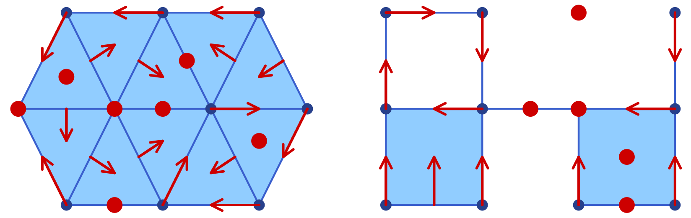
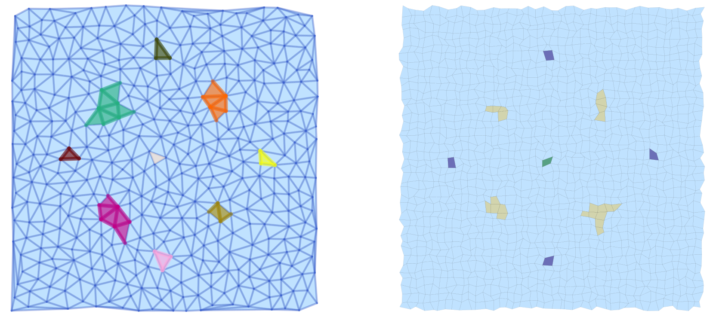
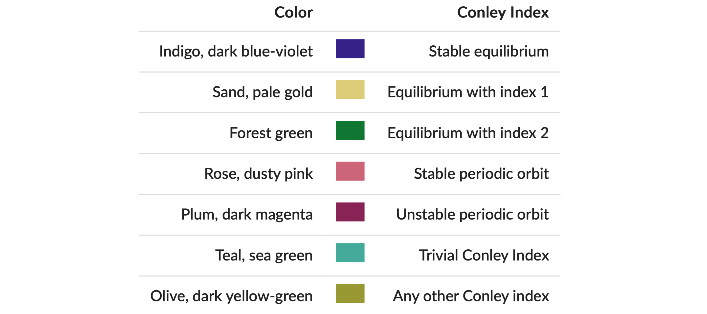
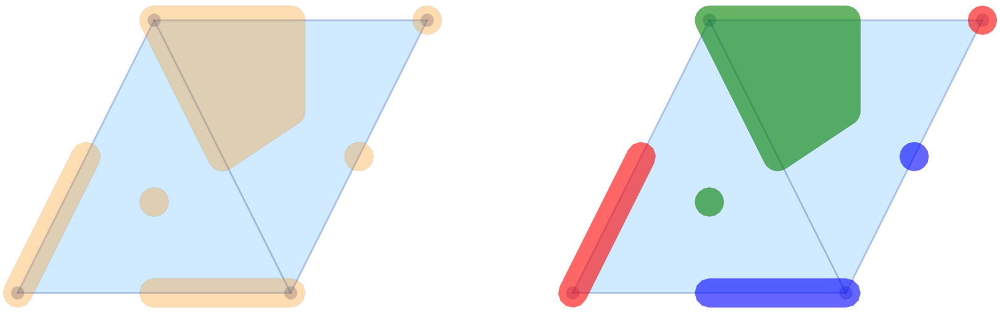
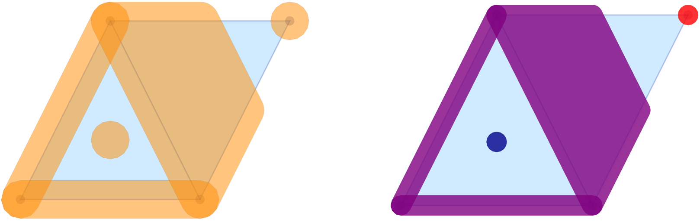
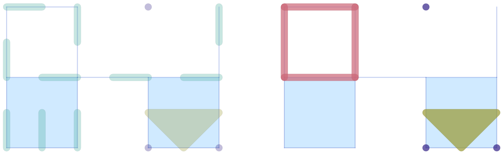
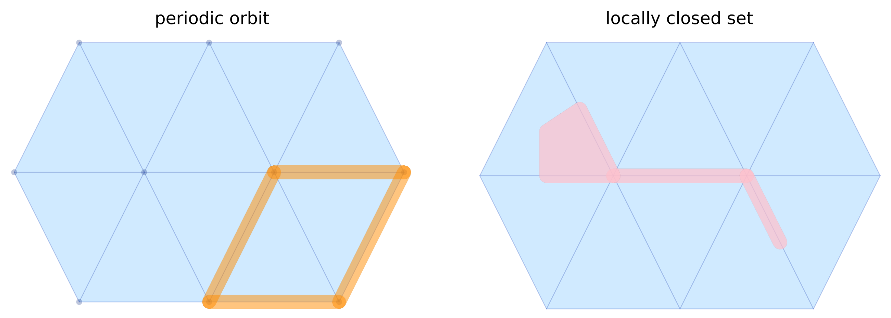

Visualization
ConleyDynamics.jl provides two independent visualization backends for planar complexes: a Luxor.jl-based backend that produces PDF, PNG, or SVG files directly, and a Plots.jl-based backend that integrates with the Julia plotting ecosystem. The two backends are described in separate sections below.
Luxor-Based Plotting
The functions
plot_planar_simplicial,plot_planar_simplicial_morse,plot_planar_cubical, andplot_planar_cubical_morse
produce publication-quality plots by writing directly to a PDF, PNG, or SVG file via the Luxor.jl package. They require an explicit output filename and a separate coordinate vector for the vertices of the complex. The type of the image file is indicated by the filename ending.
As a simple example, the following commands create a PDF image of a small simplicial complex together with its Morse sets:
using ConleyDynamics
lc, mvf = example_forman2d()
cm = connection_matrix(lc, mvf)
coords = [[50,200],[150,200],[250,200],[0,100],[100,100],
[200,100],[300,100],[50,0],[150,0],[250,0]]
fname = "forman2d_morse.pdf"
plot_planar_simplicial_morse(lc, coords, fname, cm.morse)For cubical complexes the workflow is analogous. The function get_cubical_coords extracts vertex coordinates from the cube labels, so no separate coordinate vector needs to be specified manually:
using ConleyDynamics
cc, coords = create_cubical_rectangle(4, 3)
fname = "cubical_rectangle.pdf"
plot_planar_cubical(cc, coords, fname)Both families of Luxor functions also accept a EuclideanComplex as their first argument. In that case the coordinate vector can be omitted entirely. For example, the first of the above two plots can alternatively be created using the following commands:
using ConleyDynamics
ec, mvf = example_forman2d(euclidean=true)
cm = connection_matrix(ec, mvf)
fname = "forman2d_morse.pdf"
plot_planar_simplicial_morse(ec, fname, cm.morse)Plots-Based Plotting
The Plots.jl backend provides eight convenience functions:
| Function | Description |
|---|---|
plot_simplicial | Simplicial complex with optional Forman overlay |
plot_cubical | Cubical complex with optional Forman overlay |
plot_simplicial_morse | Simplicial complex with colored Morse sets |
plot_cubical_morse | Cubical complex with colored Morse sets |
plot_simplicial_mvf | Simplicial complex with multivector field regions |
plot_cubical_mvf | Cubical complex with multivector field regions |
plot_simplicial_mv | Single multivector on a simplicial complex |
plot_cubical_mv | Single multivector on a cubical complex |
All of these functions are described with short examples in the remainder of this section.
Weak Dependency
Plots.jl is a weak dependency of ConleyDynamics.jl. This means it is not loaded automatically when you do using ConleyDynamics, and it does not need to be installed unless you want to use the Plots.jl backend. The eight functions above are stub definitions that become active only after Plots.jl has been loaded. The required loading order is:
using Plots
using ConleyDynamicsIf ConleyDynamics is loaded before Plots.jl, the plotting functions will still work because Julia activates package extensions lazily. However, loading Plots first is the recommended order.
All eight functions return a Plots.Plot object, so the full Plots.jl interface applies: the result can be displayed with display(p), saved with savefig(p, "output.png"), or composed with other plots. In particular, several plots can be combined in one plot, and it is possible to increase the plot resolution to generate high-quality images. Some of this functionality is included in the examples below.
EuclideanComplex as Input Requirement
The Plots.jl backend works exclusively with EuclideanComplex objects, which carry embedded vertex coordinates. The simplest way to obtain such a complex is to pass euclidean=true when creating a complex:
ec, mvf = example_forman2d(euclidean=true)
cc = create_cubical_rectangle(4, 3, euclidean=true)Alternatively, lefschetz_to_euclidean converts any LefschetzComplex together with a coordinate vector into a EuclideanComplex.
Plotting a Complex and Forman Vector Fields
The functions plot_simplicial and plot_cubical are the main functions for displaying a planar simplicial or cubical complex. In addition, both of them accept an optional mvf keyword argument that overlays the Forman part of a multivector field on the complex. More precisely, two-element multivectors are drawn as red arrows from the lower-dimensional cell's barycenter to the higher-dimensional one. Explicitly critical cells (singletons) and cells absent from the multivector field are rendered as red dots at their barycenters. Multivectors of size larger than two are not visualized. Thus, the functions plot_simplicial and plot_cubical will mainly be used for pure complex visualization, as well as for Forman vector fields on such complexes.

As a first example, the following commands are used to create the simplicial complex and associated Forman vector field shown in the left panel of the image:
using Plots
using ConleyDynamics
sc, smvf = example_forman2d(euclidean=true)
sp = plot_simplicial(sc, mvf=smvf)
display(sp)For the cubical case, the proceeding is similar. In order to generate the right panel of the image, we used the commands
using Plots
using ConleyDynamics
cubes = ["00.11", "01.01", "02.10", "11.10",
"11.01", "22.00", "20.11", "31.01"]
cc = create_cubical_complex(cubes, euclidean=true)
cmvf = [["01.00","01.01"], ["02.00","02.10"], ["12.00","11.01"],
["11.00","01.10"], ["00.00","00.01"], ["00.10","00.11"],
["10.00","10.01"], ["20.00","20.01"], ["32.00","31.01"],
["30.00","30.01"], ["31.00","21.10"]]
cp = plot_cubical(cc, mvf=cmvf)
display(cp)Note that the above image contains both figures side-by-side. This was achieved directly using the Plots.jl framework. One can combine both plots in a single one, change the resolution to dpi = 300, and then save the figure using the following commands:
pcombined = plot(sp, cp, layout=(1,2))
plot!(pcombined, dpi=300)
savefig(pcombined, "plots_forman.png")In the above examples, the vertices, edges, and two-dimensional cells are drawn separately using different shades of blue. In both functions, the keyword argument pdim::Vector{Bool} controls which dimensions of the simplicial or cubical complex are drawn. The three entries correspond to vertices (dimension 0), edges (dimension 1), and faces (dimension 2), respectively. For example, pdim = [false,true,true] suppresses vertices:
p = plot_cubical(create_cubical_rectangle(4, 3, euclidean=true),
pdim=[false,true,true])
display(p)Both of the above figures were created using pdim = [true,true,true], which is also the default if the argument is not specified.
Plotting Morse Sets for Planar Dynamics
The functions plot_simplicial_morse and plot_cubical_morse are used to visualize Morse sets of multivector fields on planar simplicial or cubical complexes. In addition to an argument of type EuclideanComplex, they expect a CellSubsets argument which contains a list of locally closed sets, usually the Morse sets associated with a multivector field.
To keep the visualization simple, the vertices, edges, and faces in a Morse set are all colored with the same color. While by default all cells are highlighted, both functions accept the optional argument pdim::Vector{Bool}, which allows the user to select the dimensions that should be drawn. In the case of large complexes, the choice pdim = [false, false, true] is most appropriate, since then only the two-dimensional cells are highlighted.
The Morse plot functions color each Morse set in a distinct, automatically chosen color. By default only the explicitly listed Morse sets are rendered. Passing the optional argument addcritical = true additionally draws cells absent from any Morse set as implicit singletons in separate colors. Since this is mostly used when visualizing complete multivector fields in the above way, and since the focus of the functions plot_simplicial_morse and plot_cubical_morse is on plotting Morse sets, the default value of this optional argument is addcritical = false.
To demonstrate both functions, we return to an earlier example.
using Plots
using ConleyDynamics
function planarvf(x::Vector{Float64})
#
# Sample planar vector field with nontrivial Morse decomposition
#
x1, x2 = x
y1 = x1 * (1.0 - x1*x1 - 3.0*x2*x2)
y2 = x2 * (1.0 - 3.0*x1*x1 - x2*x2)
return [y1, y2]
end
sc = create_simplicial_delaunay(300, 300, 12, 30, euclidean=true);
sc = rescale_coords(sc, -1.5, 1.5);
svf = create_planar_mvf(sc, planarvf);
scm = connection_matrix(sc, svf);
pls = plot_simplicial_morse(sc, scm.morse);
display(pls)The above commands define a vector field in the plane, create a Delaunay triangulation of the region of interest, and then associate a multivector field to these choices. Finally, the connection matrix is computed, which gives the Morse sets in scm.morse. Note that the plot command only colors the Morse sets, but in randomly chosen colors. We would like to point out that all vertices, edges, and faces of the Morse sets are emphasized, see the left panel of the image. Moreover, the vertices and edges of the underlying simplicial complex are highlighted as well.

The same vector field can also be analyzed using a cubical complex with randomly perturbed vertex locations:
cc = create_cubical_rectangle(40, 40, randomize=0.4, euclidean=true);
cc = rescale_coords(cc, -1.5, 1.5);
cvf = create_planar_mvf(cc, planarvf);
ccm = connection_matrix(cc, cvf);
plc = plot_cubical_morse(cc, ccm.morse, ci=true, pdim=[false,false,true]);
display(plc)The resulting image is shown in the right panel above. Note that due to the optional argument pdim, only the faces of the simplicial complex and the Morse sets are highlighted. In addition, this command passes the argument ci = true, which forces that the Morse set colors correspond to the Conley index of the respective Morse set as explained in the figure.

All of these colors are taken from Paul Tol's qualitative palette, which is designed for colorblind-friendly data visualization.
As before, both plots pls and plc where combined side-by-side, and then printed:
pcombined = plot(pls, plc, layout=(1,2))
plot!(pcombined, dpi=300)
savefig(pcombined, "plots_morse.png")We would like to point out that the argument ci=true can be passed to both plot_simplicial_morse and plot_cubical_morse.
Plotting Multivector Field Regions
While the above-introduced functions are suitable for the visualization of Forman vector fields and Morse sets, they often are not adequate in the setting of multivector fields, especially when the focus is on the depiction of individual multivectors. This is due to the fact that a multivector and its behavior relies crucially on which parts of its boundary are in the mouth. Thus, simply rendering the top-dimensional cell often buries the important information.
In view of this, ConleyDynamics.jl provides both plot_simplicial_mvf and plot_cubical_mvf. Both of these functions render each multivector as a single colored region. The region geometry is computed as an inflated convex hull of the cell barycenters, so adjacent multivectors are visually separated by a visible gap.
As a first example, consider the following code snippet:
using Plots
using ConleyDynamics
lc, mvf = example_julia_logo()
coords = [[0,0], [1,2], [2,0], [3,2]]
ec = lefschetz_to_euclidean(lc, coords)
p1 = plot_simplicial_mvf(ec, mvf)
p2 = plot_simplicial_mvf(ec, mvf, mvfalpha=0.6,
mvfcolor=["red", "blue", "green"])
pcombined12 = plot(p1, p2, layout=(1,2))
plot!(pcombined12, dpi=300)
savefig(pcombined12, "plots_mvf_vectors.png")
The image in the left panel of the figure shows the multivectors from the logo example in the above-described form. In the default call, all multivectors are plotted in the same color and with high opacity. It is possible to change these choices, as the second panel demonstrates. The optional argument mvfalpha allows one to change the opacity, with values closer to 1 being more solid. In addition, the vector of strings mvfcolor can be used to specify different colors for the multivectors. As the multivectors are drawn, the function cycles through the provided colors.
While their main purpose is the visualization of complete multivector fields, the above two functions can, however, also be used for the depiction of Morse decompositions. For the logo example, this can be achieved as follows.
cm = connection_matrix(ec, mvf)
p3 = plot_simplicial_mvf(ec, cm.morse, mvfalpha=0.5,
tubefac=0.1)
p4 = plot_simplicial_mvf(ec, cm.morse,
mvfcolor=["red","purple","darkblue"],
mvfalpha=0.8)
pcombined34 = plot(p3, p4, layout=(1,2))
plot!(pcombined34, dpi=300)
savefig(pcombined34, "plots_mvf_morsesets.png")
In this example, the Morse decomposition consists of two critical cells, as well as one large locally closed invariant set, which is shown in purple in the right panel of the figure. Note that the tubefac parameter controls the inflation radius as a fraction of the average edge length (default 0.05). As mentioned before, the mvfalpha parameter sets the fill opacity (default 0.3), and distinct colors can be assigned to individual Morse sets by passing a vector mvfcolor of color names.
Since the main application of the functions plot_simplicial_mvf and plot_cubical_mvf is the visualization of multivector fields, by default, cells absent from the multivector field are shown as implicit singleton regions. One can pass addcritical=false to suppress this and display only the explicitly listed multivectors. This is particularly useful for displaying Morse sets.
The treatment of multivector fields on cubical complexes is completely analogous, as the following example demonstrates.
using Plots
using ConleyDynamics
cubes = ["00.11", "01.01", "02.10", "11.10",
"11.01", "22.00", "20.11", "31.01"]
cc = create_cubical_complex(cubes, euclidean=true)
mvf = [["01.00","01.01"], ["02.00","02.10"], ["12.00","11.01"],
["11.00","01.10"], ["00.00","00.01"], ["00.10","00.11"],
["10.00","10.01"], ["21.00","11.10"], ["32.00","31.01"],
["31.00","21.10"], ["20.11","20.01","30.01","20.10"]]
cm = connection_matrix(cc, mvf)
c1 = plot_cubical_mvf(cc, mvf, ci=true,
pdim=[false,true,true])
display(c1)
c2 = plot_cubical_mvf(cc, cm.morse, addcritical=false,
ci=true, mvfalpha=0.7,
pdim=[false,true,true])
display(c2)
pc12 = plot(c1, c2, layout=(1,2))
plot!(pc12, dpi=300)
savefig(pc12, "plots_mvf_cubical.png")We would like to emphasize that in this case it is essential to pass the optional argument addcritical = false in the Morse set visualization, since only the singletons listed in cm.morse are actually Morse sets. In fact, one can see that in this example there are five Morse sets, three of which are singletons.

As with the Morse plot functions, passing ci=true to plot_simplicial_mvf or plot_cubical_mvf colors each multivector (or Morse set) by its Conley index instead of using the mvfcolor palette.
Plotting a Single Multivector
The plot_simplicial_mv and plot_cubical_mv functions highlight a single multivector on the complex background:
using Plots
using ConleyDynamics
lc, mvf = example_forman2d(euclidean=true)
cm = connection_matrix(lc, mvf)
msmax = argmax(length.(cm.morse))
mv = cm.morse[msmax] # largest Morse set
p1 = plot_simplicial_mv(lc, mv, mvfalpha=0.5)
title!(p1, "periodic orbit")
display(p1)
Cell labels (strings) are also accepted in place of integer indices:
lcset = ["ADE", "AE", "DE", "E", "EF", "FJ", "F"]
p2 = plot_simplicial_mv(lc, lcset,
mvfcolor="pink", mvfalpha=0.7,
pdim=[false,true,true])
title!(p2, "locally closed set")
display(p2)
pcombined12 = plot(p1, p2, layout=(1,2))
plot!(pcombined12, dpi=300)
savefig(pcombined12, "plots_single_mv.png")